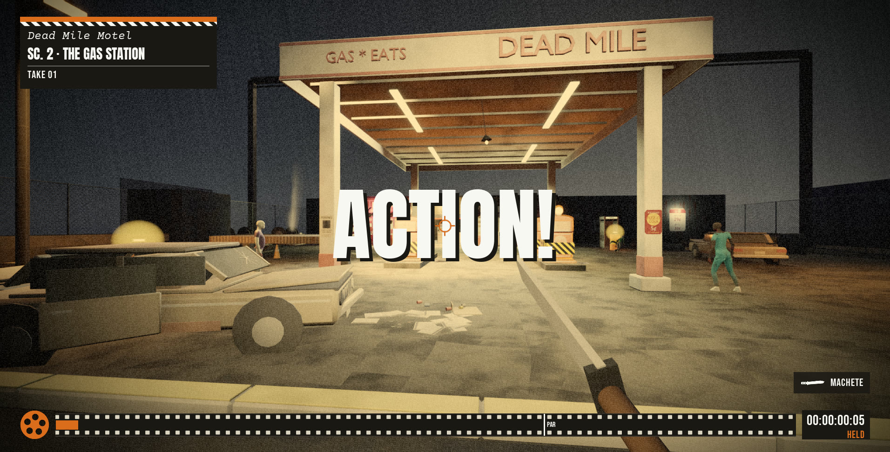
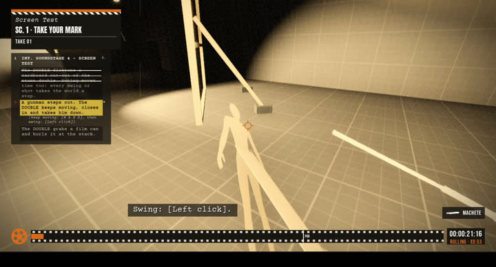

Milestone: the final build is a Shipping build, and it passed
The last window went green at 17:45 on 3f07edb57 and release packaged it in Shipping (456 MB); I played it at six and wrote "Perfect shipping passed all tests, and gained a good chunk of FPS". Three small fixes later, 0ad3f1e62 is the one we submit (see the update).
Day 4, Sun 15 NovHour 86

"Perfect shipping passed all tests, and gained a good chunk of FPS"
That was my verdict at about 18:10, after playing the final build. At the time it was the one we'd submit: game commit 3f07edb57, packaged in Shipping, a 456 MB zip. (Two hours later it was replaced by 0ad3f1e62; see the update at the end.)
Why Shipping
All jam long we packaged in Development, the configuration the jam recommends. At about half past five I read the updated submission page: Shipping is accepted for Windows too. Shipping strips the debug tools and runs faster, so I asked for it: "can the next playtest be a shipping build, can we get rid of that F7 UI for the movement mode. Also gets us some FPS back".
F7 was a key the crew used to flip between movement presets while tuning. gameplay-3 took it out of the code, ui took the inert row out of Settings, and the engine set the default in one ini line (T-0228).
The bug only Shipping could find
The first Shipping compile failed with about 200 errors. Two test files, RTEnemyTests.cpp and RTReelEDLTests.cpp, had tests sitting after their #endif guard. Development builds include the test framework, so those stray tests compiled fine. Shipping leaves the framework out, and everything outside the guard broke. gameplay-3 moved them inside the guard (125397fd9). Editor, Development and Shipping all built, and the Director called it the final green at 17:45.
The last fixes
My 16:40 notes went into that window. The tutorial now has you hit the cardboard stand-in before the noir gunman appears (T-0225). The saucer is silent in replays (T-0226). Plus world's lights and signs at the gunman station, and more light on the Blue Parrot stairs.
 Final build, screen test: the cardboard cut-out comes first now. Swing at it, and acting moves time too.
Final build, screen test: the cardboard cut-out comes first now. Swing at it, and acting moves time too.
With the cut-out crossed off, the next note is the gunman: 'A gunman steps out. The DOUBLE keeps moving, closes in and takes him down.'

The day
Today was three playtests from me, three fix rounds, a content lock at 16:00, and this. 122 commits landed on main between 07:30 and 18:00. The release session's scripted run of the zip caught a quit-at-boot bug I'd have shipped. A compile error hid behind Development builds until the last few hours.
119 tasks done, 389 kits run by the engine, 1570 commits, 40 decisions (17 made as assumptions), 12 tool problems fixed. Updated Sun 15 Nov, 18:12.
| Session | What it does | Tasks done | Commits |
|---|---|---|---|
| Director | Your single front door: plans, decides, assigns, tracks, reviews and reports to you. | 0 | 15 |
| Engine | Owns the open editor, builds and main branch; runs kits and merges; captures review media. | 2 | 220 |
| Gameplay | Core rules: player, controls, core loop, game state, win and lose. | 21 | 193 |
| UI | Every screen: HUD, menus, splash, UI animation, built as kits from designs. | 9 | 175 |
| NPC AI | NPC behaviour: StateTrees, perception, navigation, spawning. | 8 | 131 |
| World | Level layout, progression, lighting and the overall look, built as kits. | 18 | 171 |
| Audio | Sound effects, music and voice as kits; a planned workstream from day 2. | 6 | 70 |
| Floater | Generalist: overflow tasks from any domain under a path lease, cross-domain fixes, testing. | 5 | 19 |
| Devlog | Writes the public devlog, entered for the Glass Box prize. | 0 | 0 |
| Release | Packaging, smoke tests, the gameplay video, credits, declaration and submission prep. Wakes on day 2. | 4 | 88 |
| Toolsmith | Fixes what FRICTION.md reports: tools, hooks, skills, subagents. | 11 | 29 |
Still to come tonight: a Development build as a fallback, the browser build for the Play In Browser tab, and the submission.
Update, 21:30: one more build, and the fix we gave up on
This wasn't quite the last build. I played it at 19:10 and found two more things: the UFO could kill its own aliens, and on a controller the Settings menu skipped the Invert Look toggle. At 19:20 I added one more: right stick down should look down. All three were fixed and filmed, and a new Shipping build of 0ad3f1e62 passed my check at 20:25. That's the build we're submitting. 3f07edb57 is kept as a read-only backup, and it's still the one on Play In Browser.
Except the Invert Look skip was still there from the main menu. The engine session found the cause: the Settings column's focus order didn't match its visual order. The fix meant rebuilding the menu, and the rebuild pushed the editor to 49 GB of memory and filled the C: drive. I closed the editor by hand to save the machine. Three more ways to apply the fix failed to compile, and each was rolled back. At 21:25 the Director called it: "T-0232 ABANDONED ... Known flaw shipped: Settings Down from Stick look jumps past Invert Look to FOV."
So there's one known flaw in the build we submit, in a menu, on a controller.